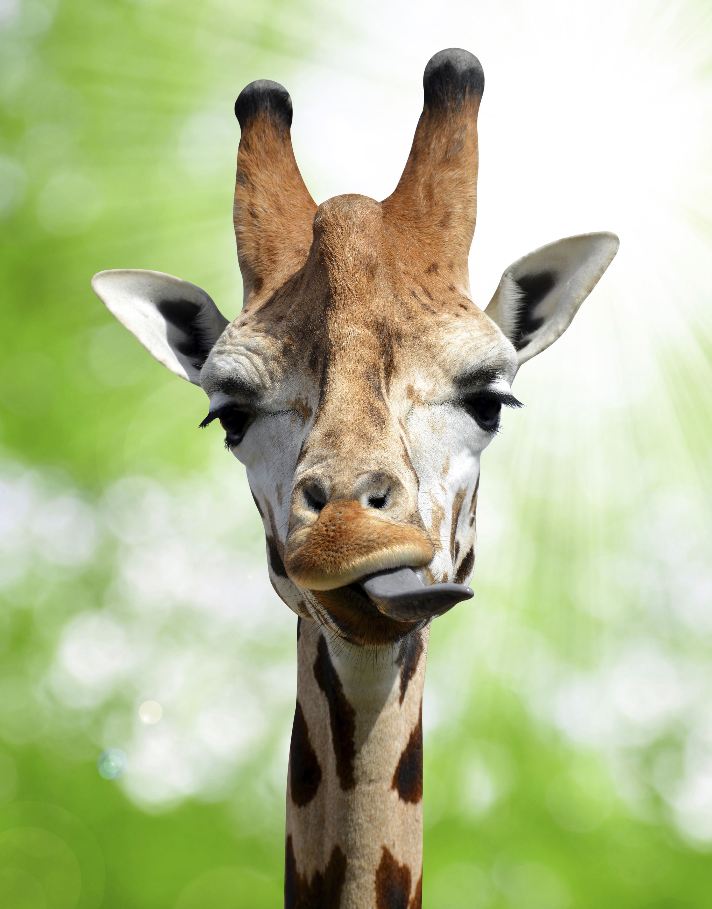
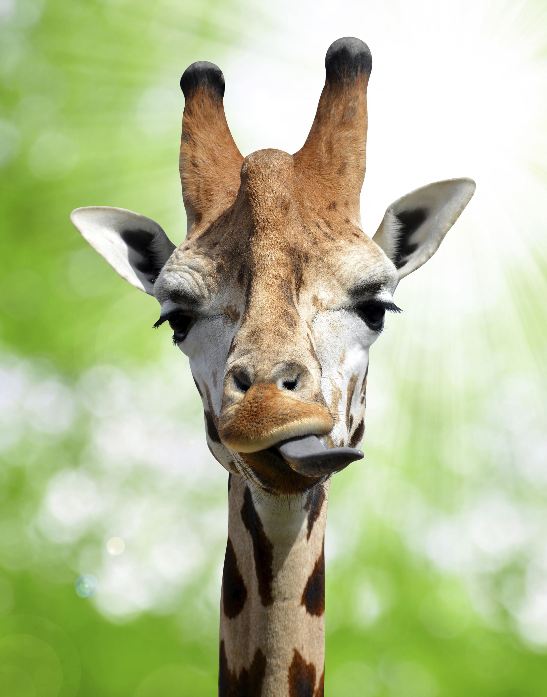

Luminaria de girafa
 


Descrição
Projeto realizado durante o job rotation,para que os alunos aprendessem como utilizar as máquinas do fab lab
Informações adicionais
o projeto foi construido com os seguintes materiais: mdf, placa de circuito, filamento de PLA